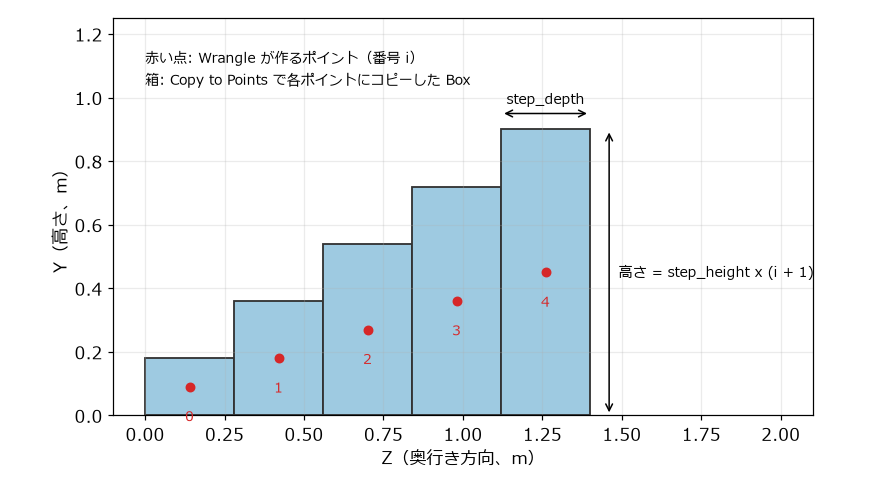
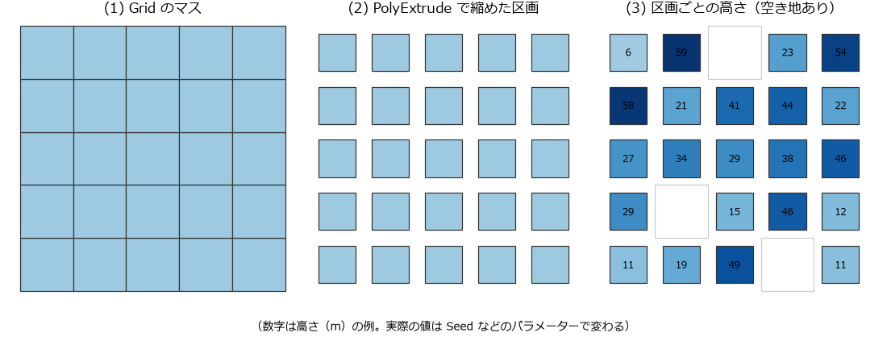

プロシージャルモデリングの実践
この章では、ここまでに学んだノード、アトリビュート、VEX を組み合わせて、パラメーターを変えるだけで形が変わるモデルを 2 つ作る。1 つ目は段数や寸法を変えられる階段、2 つ目は乱数で高さの決まる建物群である。
設計の考え方
プロシージャルなモデルを作るときは、次の順に考えるとよい。
何をパラメーターにするか決める。 使う人が変えたい値（段数、寸法、乱数の種など）を挙げる。
ポイントで配置を表す。 部品を置く位置をポイントとして作り、部品ごとに変えたい値（大きさ、向き、色など）をアトリビュートとしてポイントに持たせる。
部品をポイントにコピーする。 Copy to Points ノードが、ポイントのアトリビュートを読んで部品の大きさや向きを変える。
配置を決める処理と、部品の形を作る処理を分けておくと、部品だけを差し替えたり、配置のルールだけを変えたりしやすい。
Copy to Points が使うアトリビュート
Copy to Points ノードは、コピー先のポイントの次のアトリビュートを読んで、コピーごとの変換を決める。
アトリビュート |
型 |
意味 |
|---|---|---|
|
ベクトル |
コピーの位置 |
|
浮動小数点数 |
全ての軸に共通の拡大率 |
|
ベクトル |
軸ごとの拡大率（ |
|
ベクトル |
コピーの +Z 軸の向き（ |
|
ベクトル |
コピーの +Y 軸の向き（ |
|
4 個の浮動小数点数 |
コピーの向き（四元数）。あれば |
これ以外のポイントのアトリビュート（例えば Cd）をコピーした形状に引き継ぐかどうかは、Attributes from Target で指定する。Reset Attributes from Target のボタンを押すと、標準的な設定（変換に使うもの以外の全てのアトリビュートを引き継ぐ）が入る。
はじめてのモデリング で脚が倒れてしまったのは、N が無いときに面の向きが N の代わりに使われたためである。
作例 1: 階段
段数、1 段の高さ、奥行き、幅を変えられる階段を作る（図 17）。

図 17 階段を横から見た図（5 段の場合）
i 段目（i は 0 から数える）を、高さ step_height x (i + 1)、奥行き step_depth の箱で表す。箱の中心は、高さの半分の位置にある。そこで、各段の箱の中心にポイントを 1 個ずつ作り、箱の大きさを scale アトリビュートとして持たせる。1 辺が 1 の箱を Copy to Points で各ポイントにコピーすると、scale の大きさに拡大された箱が並ぶ。
ネットワークは 図 18 のとおりである。サンプルコードの build_stairs.py でも同じネットワークを作れる。
図 18 階段のネットワーク
/obj に Geometry ノード stairs を作り、その中で次のように作る。
Attribute Wrangle ノードを作り、名前を
step_pointsにする。入力には何もつながない。Run Over を Detail (only once) にし、VEXpression に次のコードを入力する。1// 階段の段ごとに 1 個のポイントを作る（Run Over: Detail）。 2// 各ポイントには、そこにコピーする箱の大きさを scale アトリビュートで持たせる。 3int count = chi("step_count"); // 段数 4float rise = chf("step_height"); // 1 段の高さ 5float run = chf("step_depth"); // 1 段の奥行き 6float width = chf("width"); // 階段の幅 7 8for (int i = 0; i < count; i++) { 9 float h = rise * (i + 1); // i 段目の箱の高さ（床から段の上面まで） 10 vector pos = set(0.0, h / 2.0, run * (i + 0.5)); 11 int pt = addpoint(0, pos); 12 setpointattrib(0, "scale", pt, set(width, h, run)); 13}
VEXpression の右にある、スペアパラメーターを作るボタンを押す。Step Count、Step Height、Step Depth、Width の 4 個のパラメーターができる。初期値は 0 なので、それぞれ
10、0.18、0.28、1にする。Box ノードを作り、名前を
unit_boxにする。パラメーターは既定のまま（1 辺 1 の立方体）にする。Copy to Points ノードを作り、名前を
copy_stepsにする。1 番目の入力にunit_box、2 番目の入力にstep_pointsをつなぐ。Null ノード
OUTをつなぎ、Display フラグを立てる。
step_points を選んで Geometry Spreadsheet を見ると、10 個のポイントに P と scale があることを確かめられる。VEX のコードで setpointattrib に渡した set(width, h, run) が、それぞれのポイントの scale になっている。
step_points のパラメーターを変えると、階段全体が作り直される。例えば Step Count を 20 にすると、20 段の階段になる。階段の全体の高さは step_height x step_count で、既定の値では 1.8 m になる。
作例 2: 建物群
次に、グリッドのマスを区画とみなし、区画ごとに乱数で高さを決めて建物を建てる。空き地もランダムに作る。完成すると、100 m 四方に高さの異なる建物が並んだ街のような形状になる。
図 19 は、区画を作って高さを決めるまでの流れを上から見た図である。

図 19 区画を作り、高さを決めるまでの流れ（5 x 5 のマスの場合の模式図）
ネットワークは 図 20 のとおりである。サンプルコードの build_city.py でも同じネットワークを作れる。
図 20 建物群のネットワーク
区画を作る
/objに Geometry ノードcityを作り、その中に Grid ノードgroundを作る。Size を100、100、Rows と Columns を11にする。10 x 10 の 100 個のマス（プリミティブ）ができる。PolyExtrude ノード
make_lotsをつなぎ、次のパラメーターを設定する。Divide Into: Individual Elements（マスごとに別々に処理する）
Inset:
1.5Output Side: オフ
PolyExtrude ノードは面を押し出すノードだが、Distance が 0 のまま Inset を設定すると、面を内側に縮めるだけになる。Output Side をオフにして側面を作らないようにすると、マスの間に 3 m の隙間（道路）がある区画ができる。グリッドのマスは隣とポイントを共有しているが、Individual Elements で縮めた区画は、それぞれ独立したポイントを持つ。
Attribute Wrangle ノード
lot_attributesをつなぐ。Run Over を Primitives にし、VEXpression に次のコードを入力する。スペアパラメーターのボタンを押し、Seed を0、Empty Ratio を0.2、Min Height を6、Max Height を60にする。1// 区画ごとに、建物を建てるかどうかと建物の高さを決める（Run Over: Primitives）。 2float seed = chf("seed"); 3if (rand(@primnum + seed) < chf("empty_ratio")) { 4 removeprim(0, @primnum, 1); // 空き地にする（ポイントも一緒に消す） 5} else { 6 float r = rand(@primnum + seed + 0.5); 7 f@height = fit01(r, chf("min_height"), chf("max_height")); 8}
rand(@primnum + seed)は、区画の番号と種から決まる 0 から 1 の乱数である。この値が Empty Ratio より小さい区画（全体の約 2 割）はremoveprimで消して空き地にする。残った区画には、別の乱数を 6 から 60 に換算した値をheightとして持たせる。Seed を変えると、空き地と高さの組み合わせが変わる。
For-Each ループで区画を 1 個ずつ押し出す
区画ごとに height の分だけ押し出したい。PolyExtrude ノードの Distance は 1 個の値なので、区画を 1 個ずつ取り出して押し出し、最後にまとめる。この繰り返しには For-Each ループを使う。
For-Each ループは、Block Begin ノードと Block End ノードの組で作る。2 つのノードの間に置いたノードが、入力の要素（ピース）ごとに繰り返し実行される。プログラムの for piece in pieces: に相当する。
Tab メニューで For-Each Primitive を選ぶ。Block Begin ノードと Block End ノードが、
foreach_begin1、foreach_end1のような名前で 1 組作られる。名前をそれぞれforeach_begin、foreach_endに変え、foreach_beginの入力にlot_attributesをつなぐ。Block Begin ノードと Block End ノードの間に PolyExtrude ノード
extrude_buildingを挿入する。Distance と Divisions に次の式を入力する。1prim(opinputpath(".", 0), 0, "height", 0) 2max(1, floor(prim(opinputpath(".", 0), 0, "height", 0) / 3))
1 行目が Distance、2 行目が Divisions の式である。
opinputpath(".", 0)は、このノードの 1 番目の入力につながっているノードのパスを返す。prim(パス, 0, "height", 0)は、そのノードの出力のプリミティブ 0 番のheightを読む。ループの中では、入力には処理中の区画 1 個だけが入っているので、プリミティブ 0 番がその区画である。Divisions は側面の分割数で、側面がおよそ 3 m ごとに分割されて、建物の階のように見える。foreach_endに Display フラグを立てて、全ての区画が押し出されたことを確かめる。
For-Each Primitive で作った Block End ノードは、Iteration Method が By Pieces or Points、Gather Method が Merge Each Iteration、Piece Elements が Primitives に設定されている。つまり、プリミティブを 1 個ずつ取り出して処理し、全ての結果をまとめて出力する。
色を付けて仕上げる
Attribute Wrangle ノード
building_colorをループの後ろにつなぐ。Run Over は Points のままにして、次のコードを入力する。スペアパラメーターの Max Height を60にする。1// 高さに応じて色を付ける（Run Over: Points）。低い所は暗く、高い所は明るくする。 2float t = fit(@P.y, 0.0, chf("max_height"), 0.0, 1.0); 3@Cd = lerp({0.25, 0.3, 0.4}, {0.85, 0.88, 0.95}, t);
Merge ノード
mergeを作り、groundとbuilding_colorをつなぐ。地面のグリッドに建物を重ねる。Null ノード
OUTをつなぎ、Display フラグを立てる。
lot_attributes の Seed、Empty Ratio、Max Height を変えて、街の形が変わることを確かめてほしい。
ループを使わない方法
For-Each ループは分かりやすいが、要素を 1 個ずつ処理するため、要素が多いと遅くなる。多くのノードは、要素ごとに値を変える仕組みをアトリビュートで用意している。
PolyExtrude ノードの場合、Local Control タブで Distance Scale をオンにすると、プリミティブの zscale アトリビュートの値を Distance に掛けた距離だけ押し出す。lot_attributes のコードで f@zscale = f@height; とし、PolyExtrude の Distance を 1 にすれば、ループを使わずに同じ高さの建物を作れる。
ループを使う前に、ノードのヘルプでアトリビュートによる制御ができないかを調べるとよい。Python のループを NumPy の配列の計算に置き換えるのと同じ考え方である。